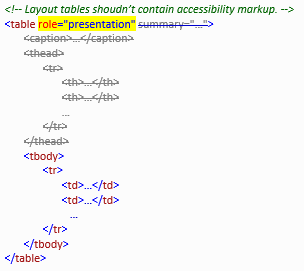

title: ARIA Presentation Table Error description: ARIA Presentation Table Error ms.assetid: 3D5AE911-78E5-4C40-B77B-604E65839F63 keywords:
Table used for layout must not have header, accessible name or summary information defined (th, summary, aria-describedby, aria-labelledby, aria-label, title, caption attributes).
Error
This error applies to HTML table tags that have the role attribute set to "presentation", or with a table that has a single cell (1×1 table).
This error indicates that a table is marked as layout only (has role="presentation"), but it also contains accessibility information as if it was a data table, which can be confusing for screen reader users.
To address this error, determine whether the table actually is just a layout table and, if so, remove the accessible markup:

If you determine that a table does need accessibility information, remove the role attribute or set it to a value other than "presentation".
Â
Â